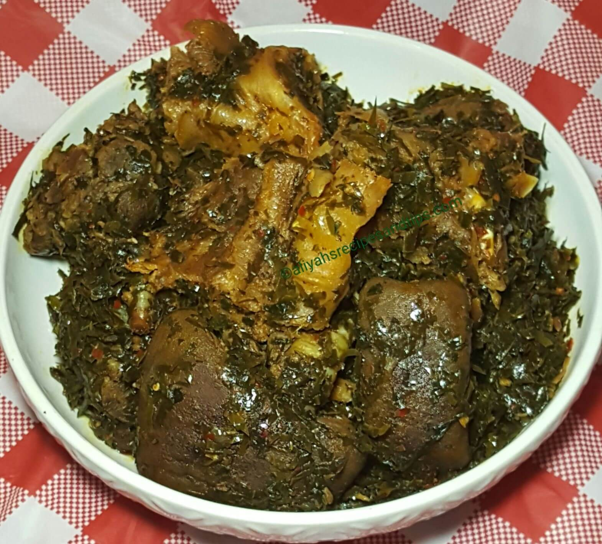

Afang Soup
Afang soup is a highly nutritious, and flavorful traditional Nigerian vegetable soup, originating from the Efik and Ibibio people of Cross River and Akwa Ibom states. It is made with a combination of two main vegetables: the Afang leaves (also known as Okazi leaves) and the waterleaf

Some Details
The prep time is usually around 30 minutes
The cooking time is also around 1hour
You can serve up to 6 people depending on the quantity
Difficulty is medium, not that hard
Ingredients
- Beef
- Stockfish
- Dried fish
- Waterleaf
- Okazi/Afang leaves, blended or bounded
- Periwinkle (optional)
- Crayfish
- palm oil
- seasoning cubes
- Dried pepper or blended pepper
- Salt
- Onions
- Cow skin (Pomo)
Instructions
- Prepare the meats and fish: In a large pot, combine the beef, cow skin, chopped onions (if using), seasoning cubes, and salt. Add enough water to cover the meat and simmer until tender (about 25-40 minutes, depending on the meat type). Add the soaked stockfish and dried fish during the last 10 minutes of cooking.
- Prepare the vegetables: Wash the Okazi leaves thoroughly. Blend them finely in a blender or pound them using a mortar and pestle. Soaking dried leaves in hot water first helps soften them. Wash and chop the waterleaf finely. You can also blend it.
- Combine ingredients: Once the meats are tender, add the palm oil, ground crayfish, and blended pepper to the pot of meat and stockfish. Stir well and let it simmer for 5 to 7 minutes.
- Add waterleaf: Stir in the chopped waterleaf. Cook for another 5 minutes; the waterleaf will release a significant amount of liquid.
- Add Afang leaves: Finally, stir in the blended Okazi leaves and shelled periwinkles (if using). Simmer for 7 to 10 minutes, stirring occasionally, until the greens are tender and the soup has thickened.
- Season and serve: Taste and adjust seasoning with salt or additional seasoning cubes as needed. Remove from heat and serve hot with a side of fufu, pounded yam, or eba.
You can get the link to the recipe below:
Recipe for afang soupNutrition Facts
- The soup is an excellent source of Vitamin A and Vitamin C, which support immune function and eye health.
- It is particularly high in essential minerals like calcium (vital for strong bones), iron (supports red blood cell formation), and magnesium.
- The assorted meats, fish, and periwinkles provide a high amount of protein for muscle building and repair.
- The combination of Okazi and waterleaf makes it very high in fiber, aiding digestion and contributing to weight management.
- The leafy greens contain antioxidants that help protect the body against free radicals and may lower the risk of chronic diseases.